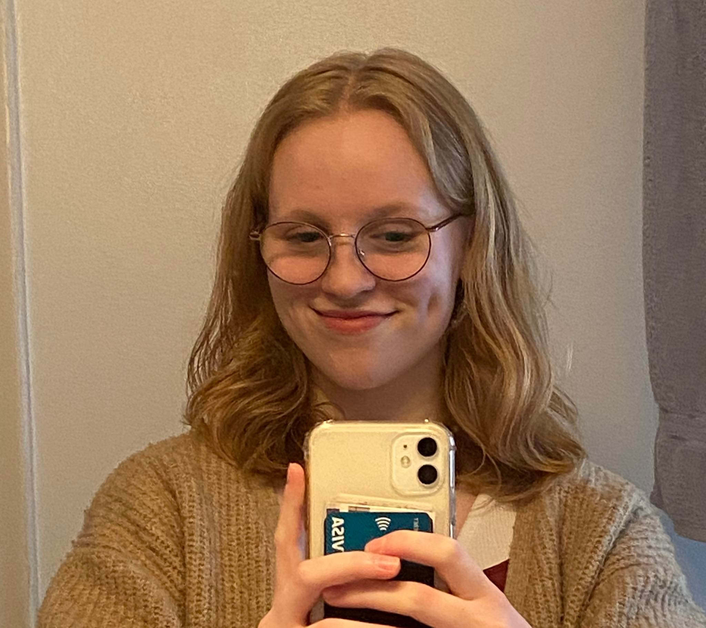

Skapandi forritun
Ég heiti Hildigunnur Ingadóttir.
Þetta er heimasíðan mín í skapandi forritun (TÖLV1AS05), sem er áfangi
kenndur við Menntaskólann við Hamrahlíð.
Ég sótti áfangann á vorönn 2023.
Við gerð þessarar vefsíðu notaðist ég mest við eftirfarandi kennsluefni:
Verkefni
Eftirfarandi eru verkefnin mín:
- Verkefni 01 - Endurgerð á málverki eftir Mondrian
- Verkefni 02 - Endurgerð verks að eigin vali
- Verkefni 03 - Eigið verk
- Verkefni 04 - Flóknari form, begin/end Shape
- Verkefni 05 - Breytilegt andlit/Breytileg fígúra
- Verkefni 06 a) - Lykkjuáskorun
- Verkefni 06 b) - Lykkjuáskorun bónus
- Verkefni 07 - Lykkjulist
- Verkefni 08 - Skilyrðissetning, svæðaþraut
- Verkefni 09 - Frjálst verkefni
Einnig er hægt að skoða verkefnin betur á p5js.org hér:
- Verkefni 01 - Endurgerð á málverki eftir Mondrian
- Verkefni 02 - Endurgerð verks að eigin vali
- Verkefni 03 - Eigið verk
- Verkefni 04 - Flóknari form, begin/end Shape
- Verkefni 05 - Breytilegt andlit/Breytileg fígúra
- Verkefni 06 a) - Lykkjuáskorun
- Verkefni 06 b) - Lykkjuáskorun bónus
- Verkefni 07 - Lykkjulist
- Verkefni 08 - Skilyrðissetning, svæðaþraut
- Verkefni 09 - Frjálst verkefni